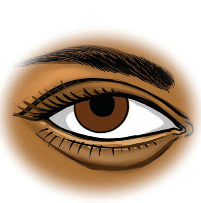

Sehemu za jicho
Jicho la binadamu limeundwa na sehemu kuu mbili. Sehemu hizo ni sehemu ya nje na sehemu ya ndani. Sehemu ya nje imeundwa na nyusi, vifuniko vya jicho na kope. Angalia Kielelezo namba 3.

Kope
Nyusi
Vifuniko vya jicho
Kielelezo namba 3: Sehemu ya nje ya jicho
Sehemu ya ndani inajumuisha mboni au irisi, pupili, lenzi na retina. Kielelezo namba 4 kinaonesha sehemu ya ndani ya jicho. Pupili huruhusu mwanga kuingia ndani ya jicho. Mboni hurekebisha kiwango cha mwanga kinachoingia kwenye jicho kwa kutanuka na kusinyaa. Retina hupokea mwanga. Taarifa hiyo ya mwanga husafirishwa mpaka kwenye ubongo ili itafsiriwe na kuwa taswira tunayoiona.